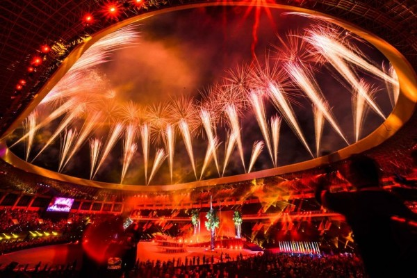

Analisis Kasus Pelanggaran Hak Cipta Lagu "Aku Papua" dalam Pembukaan PON XX Papua 2021
30 Oktober 2023
Analisis
Pada pembukaan Pekan Olahraga Nasional XX Papua yang diselenggarakan pada 2 Oktober 2021, lagu Aku Papua dinyanyikan oleh Michael Jakarimilena, Nowela Elizabeth Auparay, dan Edo Kondologit. Lagu Aku Papua Merupakan lagu milik mendiang Franky Sahilatua. Sebelumnya lagu tersebut diklaim telah dinyanyikan tanpa izin saat upacara pembukaan pekan olahraga nasional (PON) XX Papua.
Kembang Api Upacara penutupan Pon XX Papua di Stadion Lukas Enembe Jayapura, Date Jumat, 15/10/2021 (Foto: PB PON XX Papua/Martona)
Menurut Undang-Undang Nomor 28 Tahun 2014 Tentang Hak Cipta, dalam suatu ciptaan terdapat dua hak eksklusif, yaitu hak moral dan hak ekonomi. Hak moral merupakan hak yang melekat abadi pada diri pencipta yang tidak dapat dihapus atau dihilangkan. Hak ini memberikan pencipta kuasa untuk mencantumkan namanya pada ciptaan maupun mengubah ciptaan. Sedangkan hak ekonomi adalah hak untuk mendapatkan manfaat ekonomi atas ciptaan. Setiap orang yang dengan tanpa izin melakukan pelanggaran hak ekonomi dapat dipidana dengan pidana penjara paling lama sepuluh tahun dan/atau pidana denda paling banyak 4 miliar rupiah.
Mengapa Pelanggaran ini terjadi ?
Pelanggaran ini terjadi karena lagu milik mendiang Franky Sahilatua diklaim telah dinyanyikan tanpa izin dalam upacara pembukaan PON XX Papua 2021. Pihak keluarga Franky Sahilatua terutama sang istri, Harwatiningrum alias Aniq, merasa tidak terima. Pasalnya, selama ini tidak ada pihak yang datang meminta izin dengannya selaku ahli waris. Karena Hal ini Antiq bersama kuasa hukumnya, Igor Renjana kemudian melaporkan dugaan hak cipta ke Direktorat Jenderal Kekayaan Intelektual (DJKI) pada 10 Oktober 2021
Solusi
Berdasarkan Undang-Undang Nomor 28 Tahun 2014 Tentang Hak Cipta, dalam suatu ciptaan terdapat dua hak eksklusif, yaitu hak moral dan hak ekonomi. Pentingnya kesadaran untuk melakukan perizinan dalam penggunaan hasil karya orang lain perlu untuk ditingkatkan. Untuk menghindari pelanggaran atas hak moral dan hak ekonomi, setiap orang yang bermaksud untuk menggunakan suatu ciptaan wajib mendapatkan izin dari pencipta atau pemegang hak cipta.
Sumber
CNN Indonesia https://www.cnnindonesia.com/hiburan/20211022110901-227-710877/djki-selidiki-dugaan-pelanggaran-terhadap-lagu-aku-papua
My University
Universitas Jember adalah institusi pendidikan tinggi yang telah mengikrarkan diri sebagai Kampus Kebangsaan dan Kampus Pancasila.
My Profile

Namaku Mukhamad Alyasyi Thobiq dengan NIM 232410102074. Aku dari Fakultas Ilmu Komputer Program Studi Teknologi Informasi